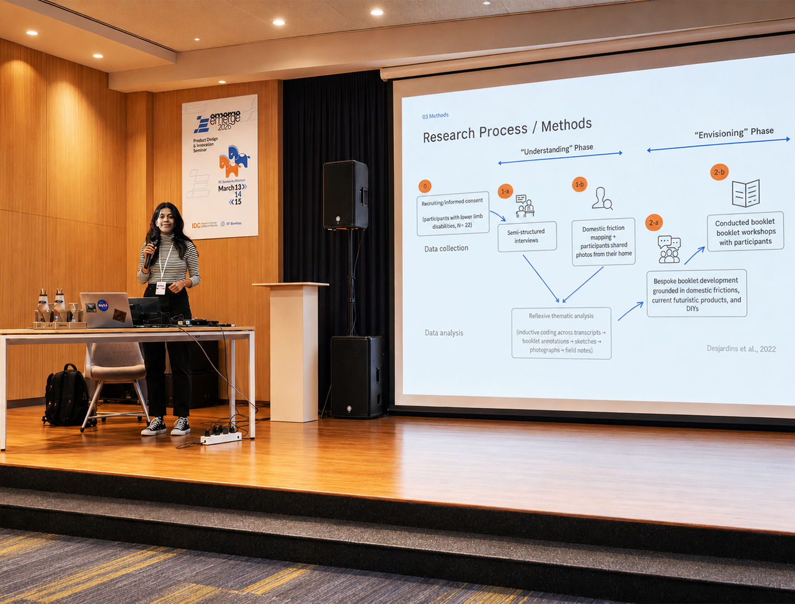
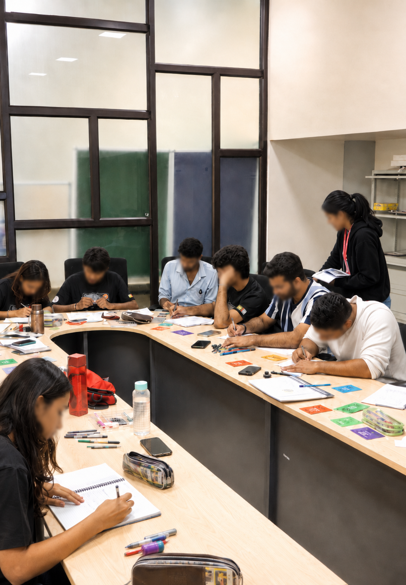
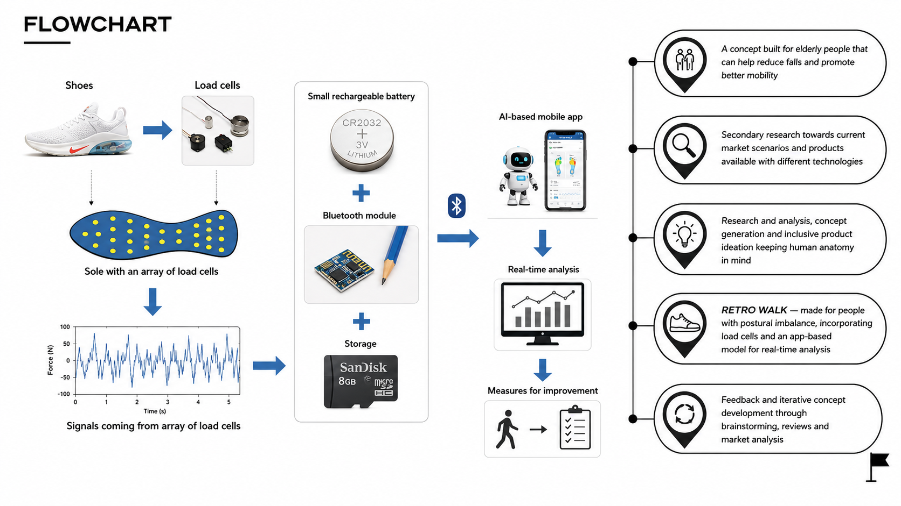
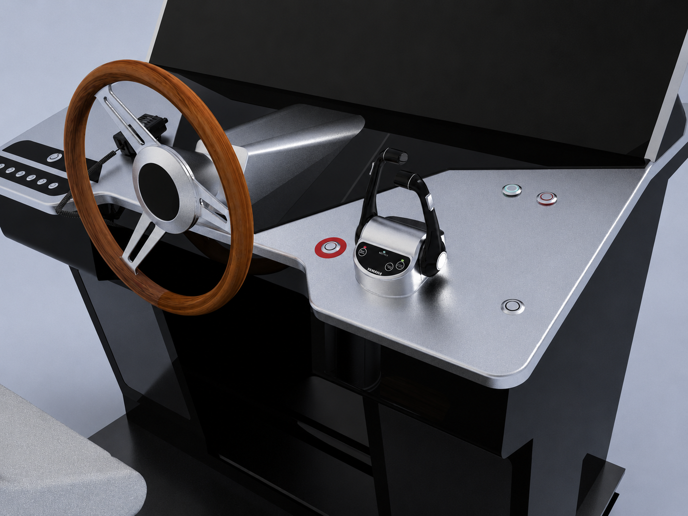

Participatory Framework
By giving them agency and not treating them as passive recipients.
HCI · ACCESSIBILITY · CARE-CENTERED RESEARCH
embodied access · speculative design · care-centered futures
*miscellaneous
01 / RESEARCH VISION
My research explores how technology can be designed WITH people who are often excluded from dominant design processes.
Across my projects, I focus on them through three values:
By giving them agency and not treating them as passive recipients.
Surfacing that technology doesn’t exist alone, it is embedded in services, relationships and care ecosystem.
Using AI to remove biases from already existing systems and products used by the masses.
02 / WORK INDEX
- thesis, half-mades, archived

● ARCHIVED [P1]
M.Des Thesis · 2026
Built simulated domestic environments in Unity (tested on Meta Quest) through participatory co-design workshops to explore lower-limb mobility, accessibility, and assistive care futures.

● ARCHIVED [P2]
Interaction Design · 2026
What if spaces could communicate through emotional atmosphere rather than instruction? A probe into soft signaling and ambient communication in shared environments.

● ARCHIVED [P3]
Wearable HCI · 2024
A smart footwear prototype exploring pressure sensing, gait correction, and early mobility support for ageing bodies.

● ARCHIVED [P5]
Graduate Research Internship · 2025
A marine HMI research project redesigning ferry cockpits around reach, visibility, cognitive load, and Indian anthropometry.
.png)
● ACTIVE [P4]
Tactile Storytelling · 2025
A research-led concept exploring whether touch, texture, and interaction can make Uttarakhand folklore feel alive for children again.
.png)
● ACTIVE [P6]
Prototype · 2026
A mechanical concept exploring how a wheelchair wheel could adapt to domestic thresholds and uneven surfaces.
03 / RESEARCH OUTPUTS
- papers · thesis · 2025–2026
J. Rautela · Abinash Kumar Swain · Madhan Kumar Vasudevan · Indian Institute of Technology Roorkee
Manuscript direction · Participatory HCI, assistive technology, and speculative care futures
Research abstract / presentation · Domestic accessibility, mobility, and participatory design
Manuscript direction · Participatory HCI, assistive technology, and speculative care futures
IDEAS abstract · Smart footwear with load-cell sensing, Bluetooth gait data, and app-based corrective feedback for fall prevention.